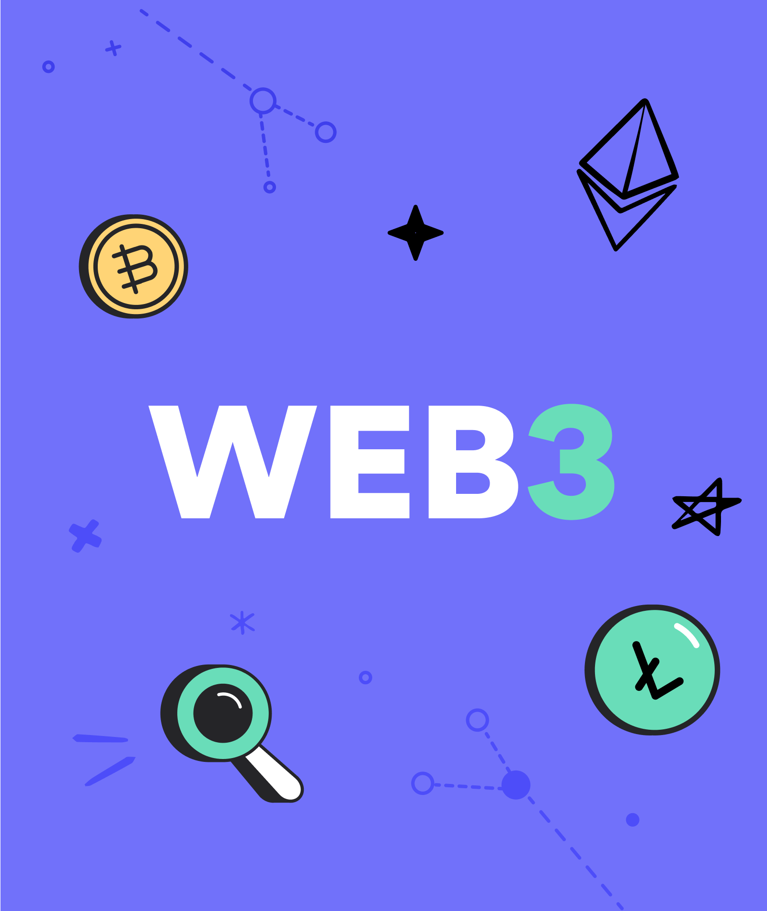

Mijn naam is Bardia en ik ben momenteel 17 jaar oud. Ik studeer Software Development aan de Da vinci in Dordrecht. Ik heb voor deze opleiding gekozen omdat ik in de toekomst mijn eigen dApps wil maken. Ik ben heel erg geïnteresseerd in Web3 en het realiseren van decentralisatie. Daarnaast hou ik heel erg van gamen in mijn vrijetijd en met vrienden uitgaan, ook hou ik me graag bezig met NFT's/Crypto. In de verleden heb ik ook een bijbaantje gehad in de sales. Ik ben daardoor veel socialer geworden en mijn communicatie vaardigheden zijn ook verbeterd. Het is ook echt prestatie werk dus je leert ook goed onderdruk te werken.
